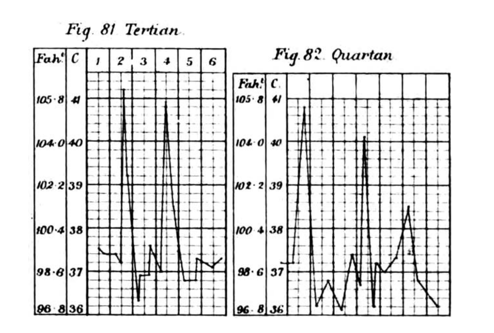
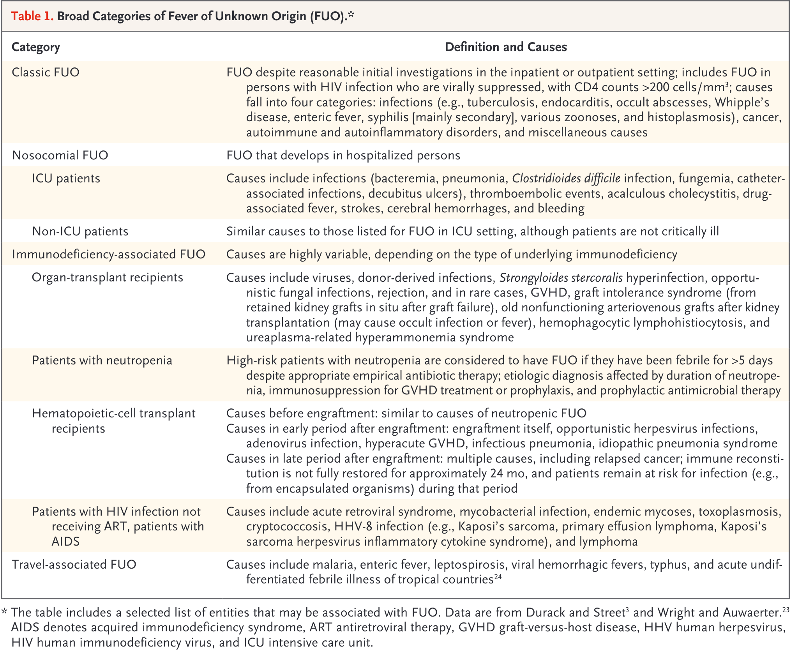
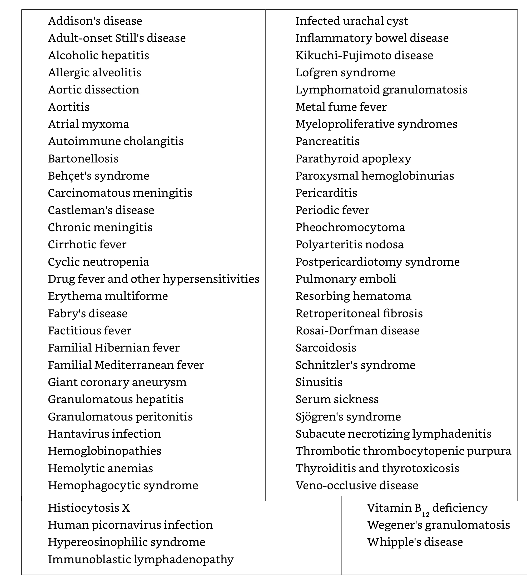
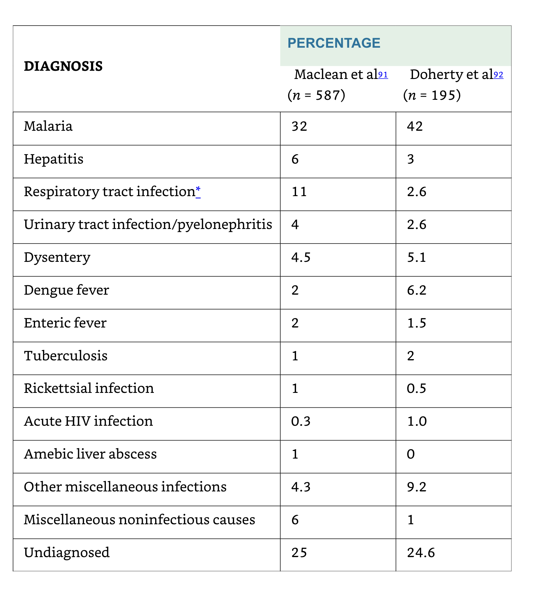
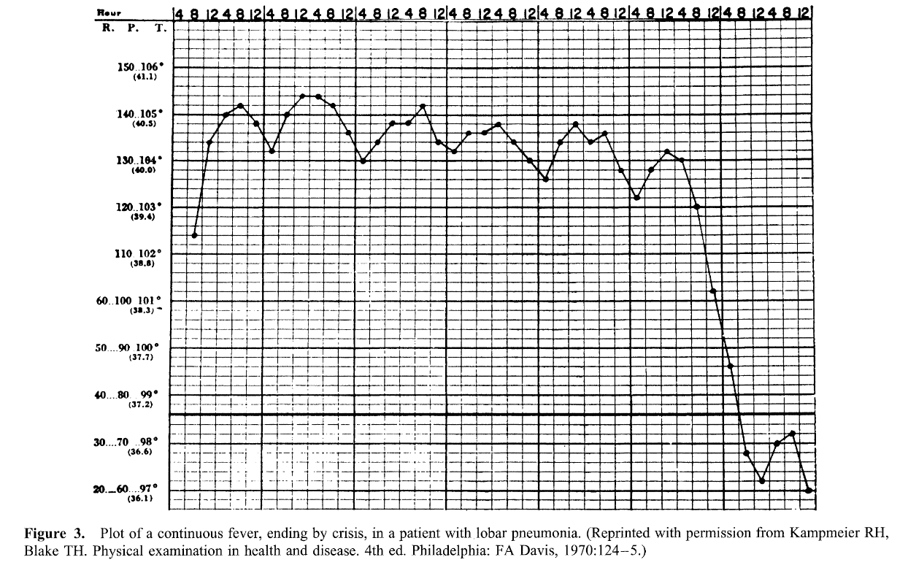
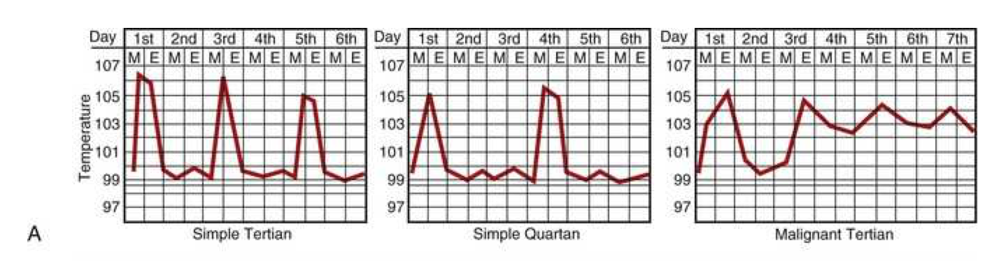
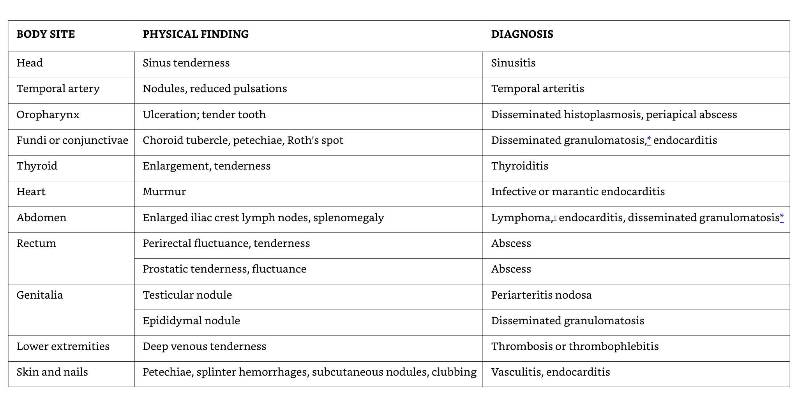
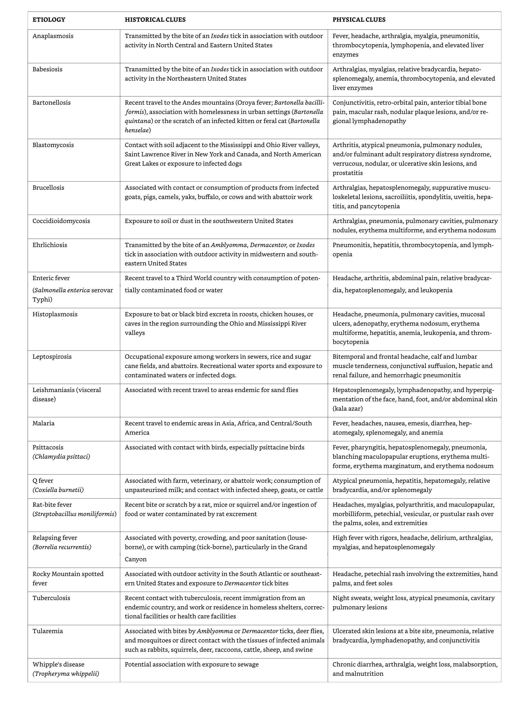

Fever of Unknown Origin (FUO)
Fever of unknown origin (FUO)
Russell Lewis
Associate Professor, Infectious Diseases
Department of Molecular Medicine
MEP 2491 Infectious Diseases
13 March 2023

Objectives
- Recognize leading infectious causes of FUO in key patient groups
- Identify key fever patterns and clinical histories that may direct diagnosis
- Differentiate FUO risks and possible spectum of pathogens in immunocompromised hosts
The history of fever
- 10th Century BCE Persian Physician Akhawayni defined a system for fever curves in Hidāyat al-Muta’allimīn fī al-Tibb (The Student’s Handbook of Medicine)
- Hippocratic physicians proposed that body temperature, and physiologic harmony in general, involved a delicate balance among four corporal humors—blood, phlegm, black bile, and yellow bile.
- Fever was due to excess of yellow bile (many infections caused jaundice)
- Galen: many types of fever developed from putrification of humors.
- Middle ages: demonic possession
- 18th century (Harvey’s discovery of circulation)- friction of blood flow through body causing fermentation and putrification in intestines
- Claude Bernard in the 19th century- metabolic processes in the body
Febris- Roman Goddess of Fever

The legend of Febris was said to center around the haunting marshes of Camagna in Southern Italy where like clockwork every year, the people would become deathly ill with a mysterious disease. She was so feared by the Romans that the suffering population had created a cult to Febris. They went so far as to wear protective amulets and build her temples in order to worship her to win her favour.
Galileo and the room thermometer in Padova

Fever in modern medicine
Wunderlich’s pioneering studies of thermometry-normal 37°C
Since the 19th century, humans have become gradually colder-0.05° to 0.5°C per decade
Current normal range is 36.3 to 36.5°C

Thermal homeostasis

Infection-associated fever

Sequelae of fever
- Phylogenetic conservation of fever over the millennia suggests fever is beneficial
- Most pathogenic bacteria are mesophiles (35°C ideal for growth)
- Fever generates hepatic iron-sequestering compounds the bind free iron necessary for microbial replication
Acute phase proteins

Role of acute phase proteins

Acute phase phenomena

Epidemiology of FUO- Definitions

Classic FUO
- Definition:
Temperature of > 38.3°C > 3 weeks
Fever >2 separate outpatient visits with diagnostic investigations or
Fever >2 visits in hospital of 3 days with diagnostic investigations
- However, these definitions are largely subjective
- Leading causes:
Infections (geography dependent)
Inflammatory conditions (age dependent)
Cancer (age dependent)
Undiagnosed /unknown
Frequency of the 5 main etiologic categories of FUO
Infectious causes decrease in patients above age 65 years

Classic FUO- Infectious Etiology
- Chronic or relapsing infections
- Occult abscess
- Endocarditis
- Tuberculosis
- Complicated urinary tract infections
- Osteomyelitis
Classic FUO work-up
- Medical history emphasis:
Travel
Contacts
Animal and insect exposure
Medications
Immunizations
Family history
Cardiac valve disorder
- Examination emphasis
- Fundi, oropharynx, temporal artery, abdomen, lymph nodes, spleen, joints, skin, nails, genitalia, rectum or prostate, lower limb deep veins
- Investigation emphasis:
- Imaging, biopsies, sedimentation rate, skin tests
Rare and miscellaneous causes of fever

Classic FUO in infants and children
- Respiratory tract infections
- Other infections: UTIs, brucellosis, tuberculosis, bartonellosis
- Kawasaki disease (age < 5 years)
- Inflammatory bowel diseases
- Still’s disease (juvenile rheumatoid arthritis)
- However, connective tissue diseases and cancers are generally rare in children
- Joint involvement is an important sign of a potentially serious disorder- e.g., connective tissue disease, endocarditis, leukemia
Classic FUO in elderly patients
- In developed countries: connective tissue diseases > infections
Temporal arteritis
Polymyalgia rheumatic syndromes
- Diagnoses are frequently missed because symptoms are subacute and non-specific
- Infections
intraabdominal abscess
Complicated UTIs
Tuberculosis
Endocarditis
Returning travellers

Nosocomial (Health-Care Associated) FUO
- Leading causes:
Drug fever
Post-operative complications (e.g., occult abscess)
Decubitus ulcers
Septic thrombophlebitis
Recurrent pulmonary emboli
Myocardial infarction
Cancer
Blood transfusion
Reactions to contrast media
Clostridium difficile colitis
Fever in post-operative patients
- Although more than 1/3 of patients may manifest fever in first 5 days surgery, < 10% of febrile patients have an identified source or positive cultures
- Fever may represent a physiological response to surgically-induced tissue injury with release of pyrogenic cytokines and interleukins rather than result of infection
FUO in ICU patients
- Early fevers are common, often non-infectious, associated with good prognosis
- Prolonged fever carries a poorer prognosis
- Sinusitis as a complication of mechanical ventilation, supine position, feeding tubes
- Other causes are similar to nosocomial infections in non-ICU patients
Abscess
Drug fever
Postoperative complications
Septic thrombophlebitis
Recurrent pulmonary emboli
Myocardial infarction
FUO in stroke patients
- Non-infective fevers are commonly seen in patients with intracranial mass effects and occur earlier after stroke than infection
- UTI are common related to urinary catheterization
FUO in neutropenic patients
ANC= Total WBC x (% Segs + % Bands)
Neutropenia is defined as an ANC of < 500 cells/mm3 or an ANC that is expected to decrease to < 500 cells/mm3 during the next 48 h.
- The term “profound” is sometimes used to describe neutropenia in which the ANC is < 100 cells/mm3
Fever occurs frequently during chemotherapy-induced neutropenia:
10%–50% of patients with solid tumors
80% of those with hematologic malignancies will develop fever during >1 chemotherapy cycle associated with neutropenia
Most patients will have no infectious etiology documented.
Signs of inflammation are notoriously absent other than fever
Possible causes of fever in neutropenic patients not responding to broad-spectrum antibiotics

Cell-mediated immunity-1

Cell-mediated immunity-2

Cell-mediated immunity-Drug allergy

Infections in immunocompromised hosts

Etiology of fever in HIV-Associated FUO (n=70)

Naproxen (NSIAD) fever suppression test for “tumor fever”
- A trial of naproxen may differentiate neoplastic from non-neoplastic fever
Temperature >37.8°C at least once a day;
Duration of fever >2 weeks;
Lack of evidence of infection (eg physical examination, laboratory examinations, and imaging studies);
Absence of allergic mechanisms (eg, drug allergy, transfusion reaction, and radiation or chemotherapeutic drug reaction);
Lack of response of fever to an empiric, adequate antibiotic therapy for at least 7 days;
Prompt complete lysis by the naproxen test with sustained normal temperature while receiving naproxen.
Diagnosis of FUO
General diagnostic evaluation of FUO
| Comprehensive history |
|---|
| Repeated physical exams |
| Complete blood count |
| Routine blood chemistry |
| Urinalysis including microscopic examination |
| Chest radiograph |
| Erythrocyte sedimentation rate, C-reactive protein |
| Antinuclear antibodies |
| Rheumatoid factor |
| Blood cultures- three separate specimens in the absence of antimicrobial therapy |
| CMV IgM antibodies or viral detection in blood |
| Heterophil antibody test in children and young adults |
| Tuberculin skin test |
| Computed tomography of abdomen, pelvis and other sites |
| MRI/Radionucleotide scans |
| HIV antibodies or viral detection assay |
| Further evaluation of any abnormality detected by above tests |
| Various duplex imaging of lower limbs |
Patient history
- Helps guide choice of initial laboratory investigations
- Particular attention should be given to:
Recent travel
Exposure to pets and other animals
Work environment
Recent contact with people with similar symptoms
Family history (e.g., familial Mediterranean fever)
- Prior history of FUO
- Previously diagnosed conditions
Lymphoma
Rheumatic fever
Intraabdominal disorders
- Complete list of medications
Verification of fever and fever pattern
- Obvious,… but often overlooked
- In some series, up to 30% referred for FUO where determined to not have fever
- Fever patterns- arcane terminology:
- remittent, intermittent, hectic, quotidian, sustained, quartan, saddleback fevers
- Fever patterns are affected by:
Hydration, ambient temperature
Accuracy of temperature measurements
Use of antipyretics, corticosteroids
Blood transfusions, other medical interventions etc.
Continuous sustained fever
- Continuous (sustained) fever with slight remission not exceed 2°C
- Lobar and Gram negative pneumonia
- Rickettsiosis
- Typhoid fever
- CNS disorders
- Tularemia
- Falciparum (malignant tertian) malaria

Malaria fever

Febrile paroxysms may occur every other day for P. vivax, P. ovale, and P. falciparum and every third day for P. malariae. Paroxysms occurring at regular intervals are more common in the setting of infection due to P. vivax or P. ovale than P. falciparum. With improvements in early diagnosis and treatment, this traditional description of cyclic fever is seen infrequently.
Intermittent fever
- Intermittent (septic, quotidian, “picket fence”) fever with wide fluctuations, usually normal or low in the morning and peaking between 4:00 and 8:00 PM
- Localized pyogenic infections and bacterial endocarditis with chills and leukocytosis
- Malaria (often with leukopenia) may present with daily (quotidian) daily spike or (tertian) spike every 3rd day, or (quartan) spike every 4th day.
- Double quotidian patter (two daily spikes) seen with salmonellosis, miliary tuberculosis, double malarial infections (more than one species), gonococcal and meningococcal endocarditis
Saddle-back (biphasic)
- Several days of fever, distinct reduction in fever for ~ 1 day, and then several days of higher fever
- Dengue and yellow fever
- Colorado tick fever
- Rift valley Fever
- Influenzae and other viral infections

Intermittent hectic (Charcot’s) fever
- Sporadic episodes of fever, periods of normal temperature with recurrence
- Frequently seen in cholangitis associated with cholelithiasis, jaundice, leukocytosis and toxic signs
Pel-Ebstein fever
- Weekly or longer periods of fever and equally long afebrile periods, with repetition of the cycle
- Hodgkin’s disease
- Brucellosis due to Brucella melitensis
- Occasionally tuberculosis

Typus Inversus
- Reversal of diurnal pattern, with highest temperatures in the early morning hours rather than during the late afternoon or evening
Miliary TB
Salmonelloses
Hepatic abscess
Bacterial endocarditis
Typhoid fever

Jarisch-Herxheimer reaction
- Sharply increased elevation of temperature with shivers and chills occurs within several hours after starting penicillin therapy
- Lysis of spirochetes
- Primary or secondary syphilis; Leptospirosis; or tick-borne relapsing fever
- Tetracycline or chloramphenicol therapy for acute brucellosis
Physical examination
- Some signs are subtle and may require repeated exams to be appreciated
- Vigorous search for lymphadenopathy (consideration for biopsy)

Laboratory investigations
“The cause is more often a common disease presenting in an atypical fashion than a rare disease presenting in a typical fashion.
- Multiple diagnostic algorithms in the literature
- Must be selectively applied or will result in excessive unfocused diagnositc testing
False positives
Misguided treatment plans
- History and physical exam (most important) should guide the choice and sequence of tests
Examples of potential diagnostic clues

Bone marrow biopsy
- Granulomatous infections (e.g., tuberculosis, histoplasmosis, sarcoidosis)
- Patients with abnormal complete blood counts (CBC)
Imaging studies
- Generally low diagnostic yield without localizing symptoms
CT of abdomen, chest
Ultrasound of gallbladder and hepatobiliary systems
CT pulmonary angiograms for pulmonary embolus
MRI for CNS, abdomen spleen and lymph nodes Aortic arch and proximal cervical arteries (vasculitis)
The indium 111- tagged white blood cell (WBC) scan (becoming less comon)
Gallium-67 (67Ga) scan (replaced by PET-CT)
18F-fluorodeoxyglucose (FDG) positron emission tomography (PET)

F-fluorodeoxyglucose (FDG) positron emission tomography (PET)

Invasive diagnostic procedures
Histopathological examination of tissues obtained by excisional biopsy , needle biopsy or laparotomy can provide definitive diagnosis in some cases
Majority of FUO patients will undergo at least one procedure
Treatment
A fundamental principle in classic FUO is that therapy should be withheld until the cause of fever is determined
Non-specific treatment rarely “cures” FUO
Empiric treatment may delay the clinical diagnosis
Clinical reality is that therapeutic trials with corticosteroids, aspirin, antimicrobial agents may be considered
May delay correct diagnosis/treatment
The road to diagnosis of FUO is, by definition, long and frustrating
Clinicians are often pressured to treat symptoms
Diagnostic summary

When is immediate treatment indicated?
- Empirical treatment with corticosteroids in patients with suspected temporal arteritis to prevent vascular complications such as blindness and stroke
- Febrile neutropenia or other severely immunocompromised patients: high prevalence of serious bacterial infections- patients should receive broad-spectrum antimicrobial therapy with anti-pseudomonas coverage after appropriate cultures are obtained
- Therapeutic trials with narrow spectrum therapy (e.g. anti-mycobacterial agents) may be considered in select cases with history suggestive of TB
Prognosis
- Determined y the cause of fever and nature of underlying disease(s)
- Elderly patients with malignant neoplasms have the poorest prognosis
- Diagnostic delay associated with poorer prognosis in:
Intra-abdominal infections
Miliary tuberculosis
Disseminated fungal infections
Recurrent pulmonary emboli
- Patients with undiagnosed FUO after extensive evaluation still generally have a a favourable outcome, with most patients experiencing resolution of fever within 4 weeks without sequlae.
- 5-year mortality rates of 3%